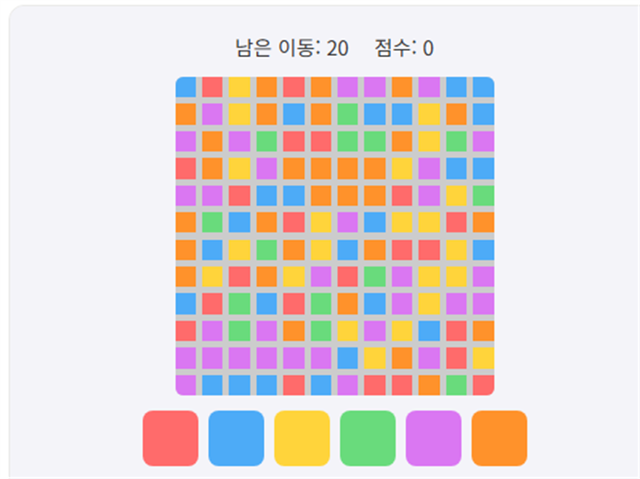

컬러 채우기는 12x12 격자의 왼쪽 위 칸에서 시작해, 색을 하나씩 선택하며 연결된 영역을 넓혀 정해진 턴 안에 보드 전체를 한 가지 색으로 채우는 퍼즐 게임입니다.
기본 규칙
- 왼쪽 위 칸이 내 영역의 시작점입니다.
- 색 버튼을 클릭하면 내 영역과 그 색이 같은, 인접한 모든 칸이 내 영역으로 합쳐집니다.
- 정해진 턴 수 안에 보드 전체를 한 색으로 채우면 클리어입니다.
- 턴을 다 쓰기 전에 클리어할수록 더 높은 점수를 받습니다.
턴을 아끼는 팁
1. 내 영역과 맞닿은 색 중 가장 넓은 색을 고르세요
매 턴 내 영역 바깥 경계에 어떤 색이 가장 넓게 붙어 있는지 확인하고, 그 색을 선택하면 한 번에 더 많은 칸을 흡수할 수 있어 턴을 아낄 수 있습니다.
2. 한 수 앞을 생각하세요
지금 당장 가장 넓어 보이는 색보다, 그 색을 선택했을 때 다음 턴에 또 어떤 색과 넓게 맞닿게 되는지까지 고려하면 전체 턴 수를 더 줄일 수 있습니다.
직접 플레이해보고 싶다면 여기서 바로 시작할 수 있습니다.